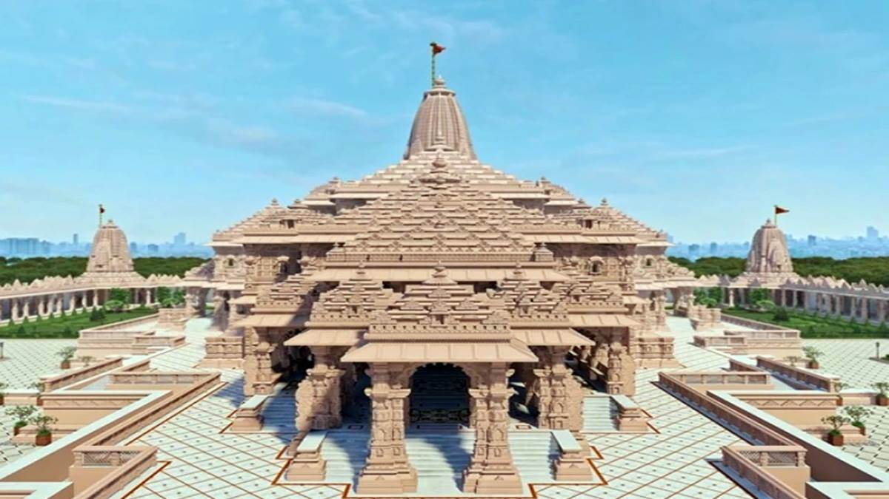

Tourist places in india

Taj Mahal, Agra
An Immortal symbol of Love
The Ram Mandir is a Hindu temple complex under construction in Ayodhya, Uttar Pradesh, India. Many Hindus believe that it is located at the site of Ram Janmabhoomi, the mythical[c] birthplace of Rama, a principal deity of Hinduism.

Majestically located on the banks of Yamuna River, this wonder of the world was built by the Mughal Emperor Shah Jahan as a memorial for his beloved wife Mumtaz Mahal.

Also known as Sri Harmandir Sahib, Golden Temple is considered to be the most important pilgrimage site amongst Sikhs and will leave you in awe with its jaw-dropping gold and marble edifice.

Towering 73 metres high above the greens in Mehrauli, construction for this five-storey minaret was started by Qutb ud Din Aibak, founder of Delhi Sultanate. It is renowned for the artistic brick-work on its pillars and arches.

Red fort Located in Chandni Chowk Old Delhi, this red sandstone structure was constructed under the reign of Mughal emperor Shah Jahan for protection against invaders. It is known for its intricate Mughal architecture and floral designs.

n iconic landmark of the city, the honeycomb-shaped palace features beautiful jharokhas and windows. This five-storey building has been built without a foundation and is known for its exceptional ventilation, which is also the reason behind its name, Hawa Mahal, which literally translates to ‘Palace of the Winds’.
The palace was mainly constructed to enable the ladies of the royal family to see the busy streets from the palace jharokhas.